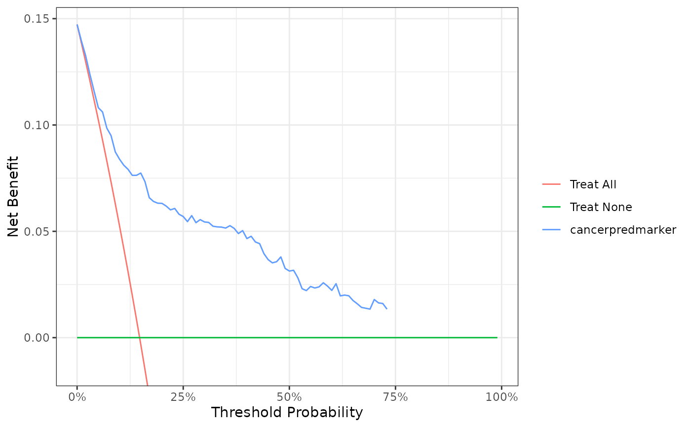

Diagnostic and prognostic models are typically evaluated with measures of accuracy that do not address clinical consequences. Decision-analytic techniques allow assessment of clinical outcomes but often require collection of additional information may be cumbersome to apply to models that yield a continuous result. Decision curve analysis is a method for evaluating and comparing prediction models that incorporates clinical consequences, requires only the data set on which the models are tested, and can be applied to models that have either continuous or dichotomous results. The dca function performs decision curve analysis for binary outcomes. See http://www.decisioncurveanalysis.org for more information.
dca( formula, data, thresholds = seq(0.01, 0.99, length.out = 99), label = NULL, harm = NULL, as_probability = character(), time = NULL, prevalence = NULL )
Arguments
| formula | formula |
|---|---|
| data | a data frame containing the outcome of the outcome predictions. |
| thresholds | vector of threshold probabilities between 0 and 1. |
| label | named list of variable labels, e.g. |
| harm | named list of harms associated with a test. Default is |
| as_probability | character vector including names of variables that will be converted to a probability. |
| time | if outcome is survival, |
| prevalence | When NULL, the prevalence is estimated from |
Value
List including net benefit of each variable
Author
Daniel D Sjoberg
Examples
dca(cancer ~ cancerpredmarker, data = df_dca)#>#>#>